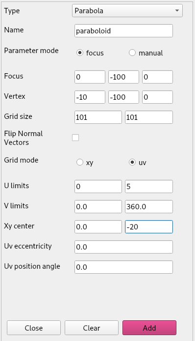
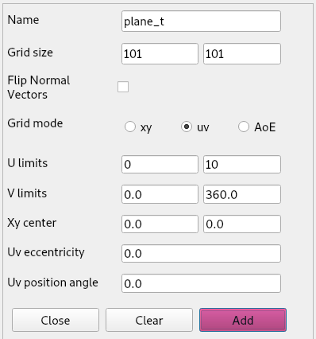
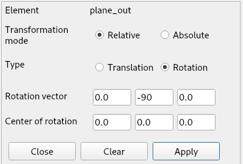
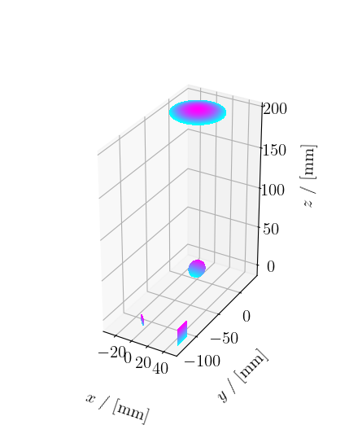
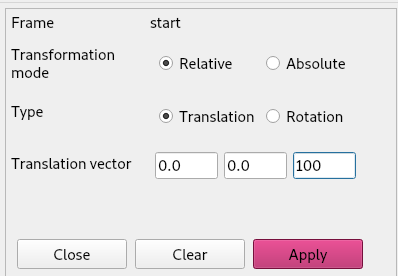
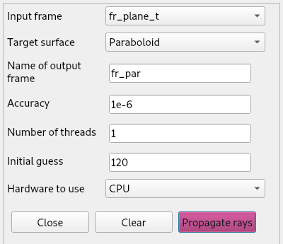
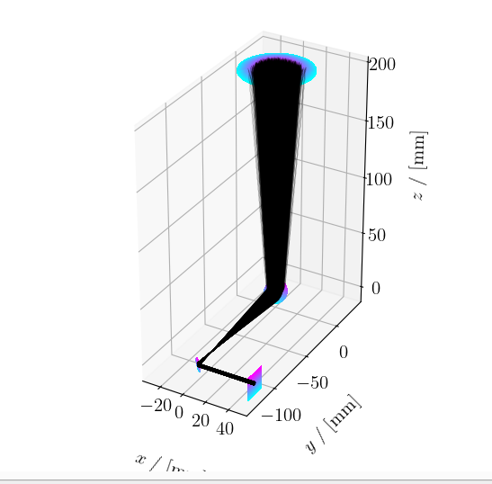

In the previous tutorial we built a simple optical system consisting of one paraboloid. We then performed a ray-trace from the initial frame of rays, defined in the aperture of the paraboloid, to the paraboloid surface, and from the paraboloid we found the focus of the frame by using the focus finder. We did all of this using the tubular ray-trace frame input.
In this tutorial, we will introduce Gaussian ray-trace frames. We will then create an optical setup that is slightly more advanced, where we try to generate a collimated beam from a Gaussian ray-trace beam.
As a setup we will define a paraboloid, an ellipsoid and two planes with the following parameters:
|
 |
|  | |
Then we apply the following transformations:
 |
 |
Note that we do the rotation on plane_out before the translation. Because rotations and translations do not commute, it is important to apply these in the intended order.
This is what our resulting system will look like:

We will save this system now, to demonstrate how this works. We can do so from the systems menu > save system. A form will show up allowing us to give a name to the saved file.

Just like with regular PyPO, the GUI will save the
system in the current working directory.
From the Ray-Tracer menu we select Make Frame > Gaussian and we pass in the following parameters:

We will translate the frame upwards by 100 mm.

If we now plot this frame in the x,y plane, it will look like this:

In the Ray-tracer menu we select Propagate rays and we perform the following propagations. Note that each propagation generates a new frame. To be able to select this frame as input frame for a next propagation, we have to reopen the form from the menu bar.
 |
 |
|  |  |
To plot the rays we select Plot ray-trace from the Systems menu and select All.

Note that a warning shows up in the console when opening this form. This warning is only relevant if you choose Select instead of All. Select allows you to make a selection of frames that will be plotted. If these frames are not related, e.g. they are not generated as propagations of some initial frame, the output will be nonsensical.